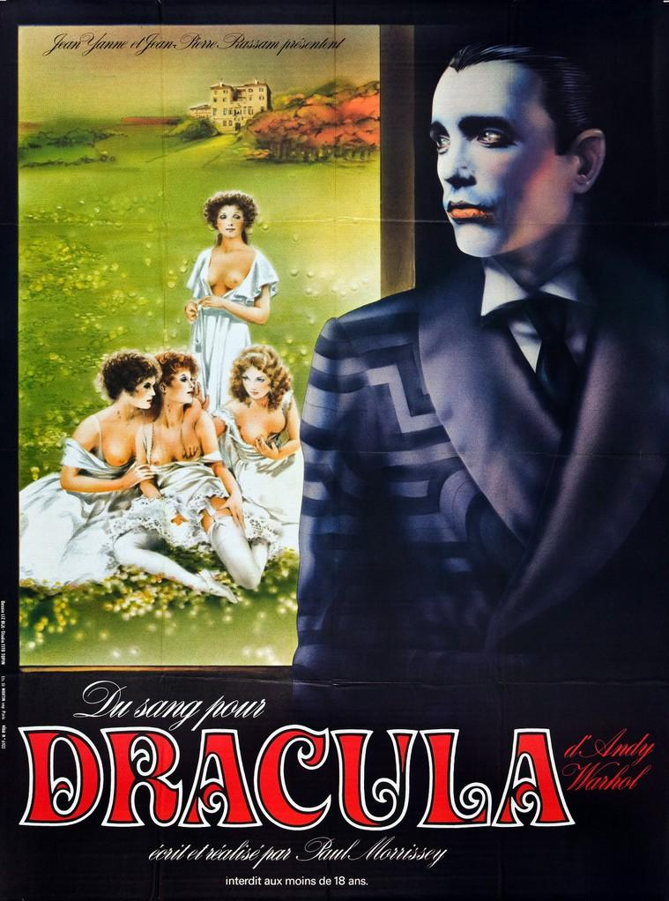
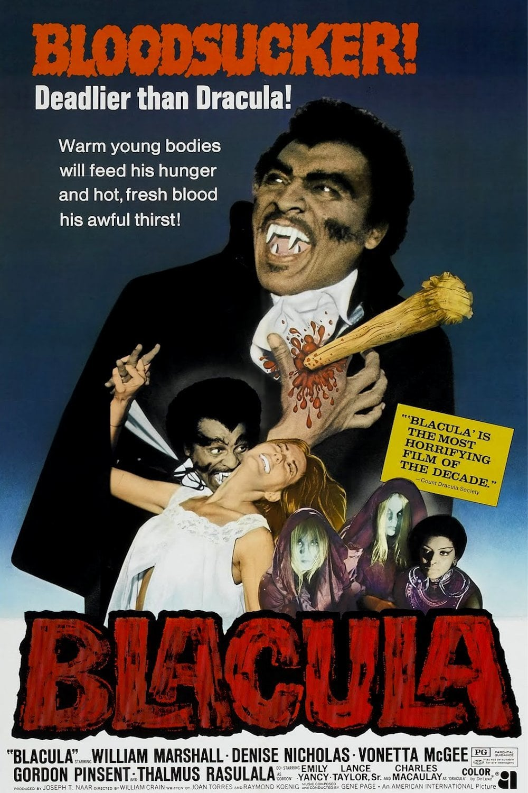
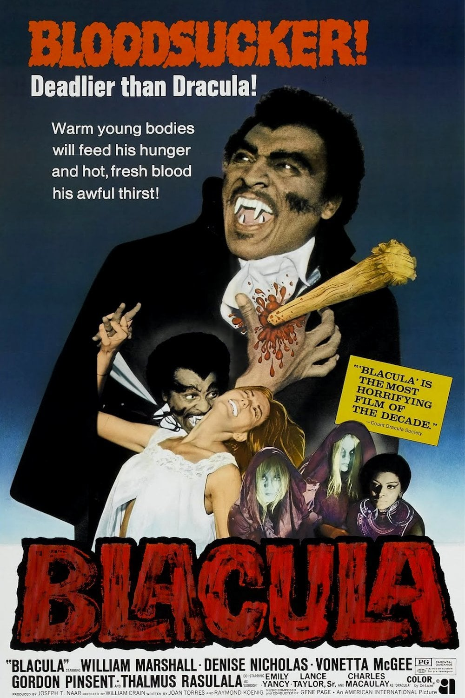

"Les vampires sont des créatures légendaires qui apparaissent dans les mythes et les légendes de diverses cultures à travers le monde. Ils sont souvent décrits comme des morts-vivants assoiffés de sang qui se nourrissent de la vie des vivants. Les vampires sont généralement associés à la nuit, à la lune et à d'autres symboles de l'obscurité. Ils sont souvent représentés comme des êtres séduisants et mystérieux, capables de contrôler les esprits des mortels et de se transformer en chauve-souris ou en loup. Les vampires ont été popularisés dans la littérature et le cinéma, notamment par des œuvres comme "Dracula" de Bram Stoker (1897) et "Entretien avec un vampire" d'Anne Rice (1976)." (Copilot)
Origine du Mythe
Magazine GEO - Dracula Prince de Transylvanie - 2021Le mythe du vampire _ Où est-il apparu et pourquoi _ - BBC News Afrique
Filmographie
Dès le début des années 1900, le cinéma muet avait produit quantité de films de vampires. Ceux-ci apparaissaient tels des zombies sortis d'outre tombe et étaient assoifés de sang. Ils étaient censés faire peur. Le public en raffolait.Depuis, la thématique n'a cessé de plaire aux producteurs et réalisateurs.
Toutefois, le registre des films de vampires a évolué. "Les vampires sont devenus des personnages romantiques et séduisants. Ils sont souvent présentés comme des êtres torturés, en quête d'amour et de rédemption." (Copilot)
L'hérotisme ("Du Sang pour Dracula" - Paul Morrissey 1974) et l'humour ("Le bal des Vampires" - Roman Polanski 1967) ont investi le genre. Une quirielle d'autres oeuvres sont apparues sur la toile. Certaines sont devenues cultes, d'autres ont sombré dans l'oubli. (les Vampires au Cinéma)
"L'Afrique s'est aussi interéssée au mythe des vampires. Le film "Blacula" (1972) de William Crain, met en scène un prince africain transformé en vampire par Dracula lui-même. Ce film est un classique du cinéma de genre et a inspiré de nombreux autres films de vampires noirs." (Copilot)
Galerie

 
